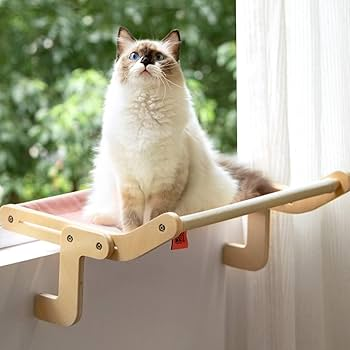

Fluffy and Fabulous A fluffy cat lounges like royalty, fur soft as a cloud and eyes full of mischief—proof that comfort, confidence, and cuteness can coexist. Do you know about tabby cats?



One Day in the Beach A sunny beach day with my dog—salty air, sandy paws, and endless joy chasing waves along the shoreline. Do you know what a dog beach is?